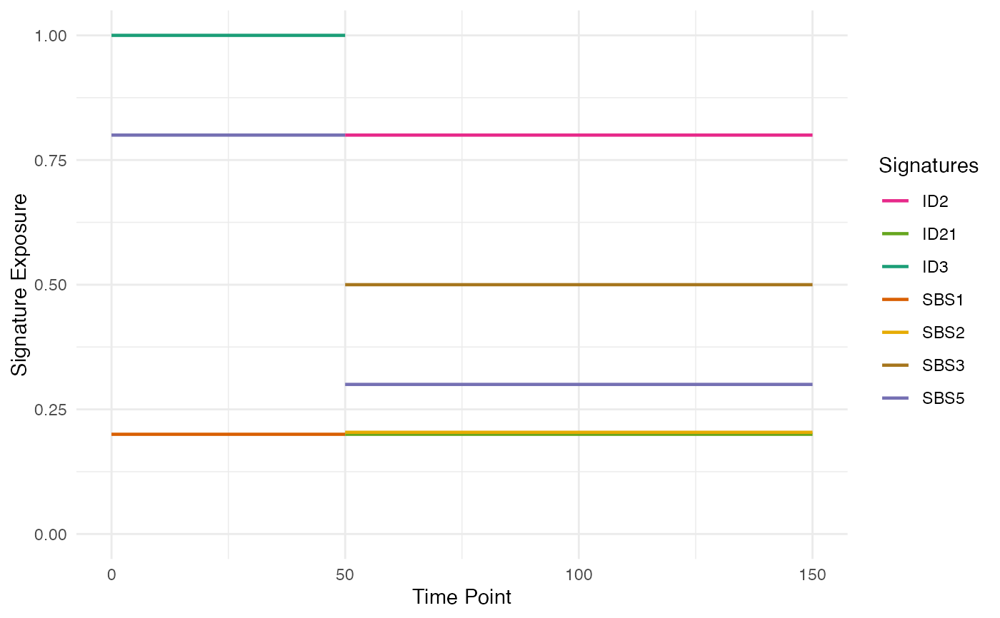
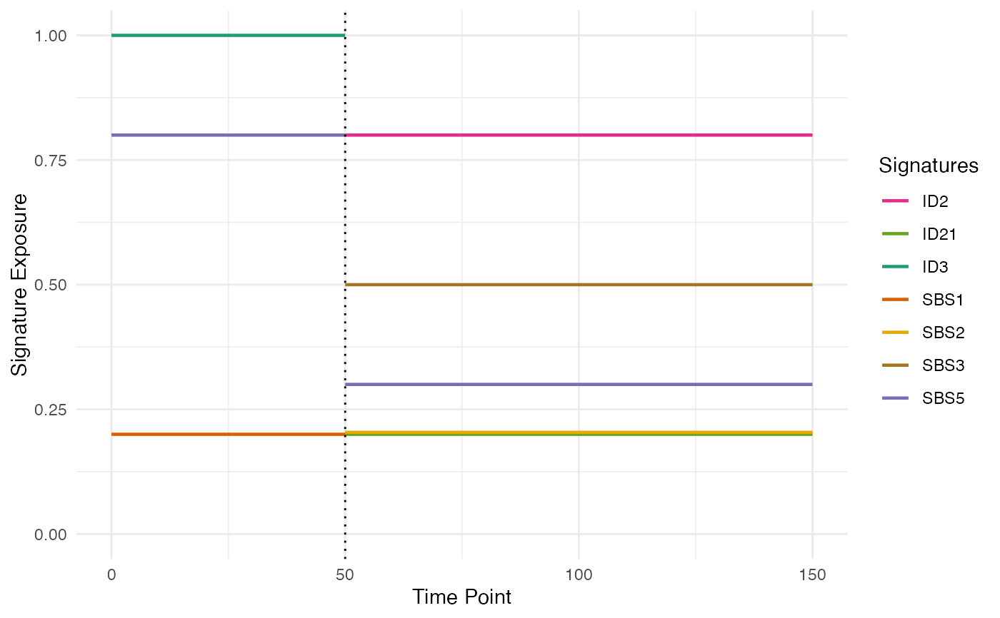

Plots the signatures exposure changes along a phylogenetic forest.
Arguments
- phylogenetic_forest
A phylogenetic forest.
- linewidth
The width of the lines in the plot.
- emphatize_switches
A Boolean flag to emphatize the exposure switches.
Examples
sim <- new(Simulation)
sim$add_mutant(name = "A",
growth_rates = 0.2,
death_rates = 0.0)
sim$place_cell("A", 500, 500)
sim$run_up_to_time(60)
#>
[████████████████████████████████████████] 100% [00m:00s] Saving snapshot
# sampling tissue
n_w <- n_h <- 50
ncells <- 0.8 * n_w * n_h
bbox <- sim$search_sample(c("A" = ncells), n_w, n_h)
sim$sample_cells("Sampling", bbox$lower_corner, bbox$upper_corner)
forest <- sim$get_samples_forest()
# placing mutations
m_engine <- build_mutation_engine(setup_code = "demo")
#>
[█---------------------------------------] 0% [00m:00s] Loading context index
[████████████████████████████████████████] 100% [00m:00s] Context index loaded
#>
[█---------------------------------------] 0% [00m:00s] Loading germline
[████████████████████████████████████████] 100% [00m:00s] Germline loaded
m_engine$add_mutant(mutant_name = "A",
passenger_rates = c(SNV = 8e-8),
driver_SNVs = c(), driver_CNAs = c())
#>
[█---------------------------------------] 0% [00m:00s] Retrieving "A" SNVs
[████████████████████████████████████████] 100% [00m:00s] "A" SNVs retrieved
m_engine$add_exposure(c(SBS1 = 0.2, SBS5 = 0.8))
m_engine$add_exposure(time = 50,
c(SBS5 = 0.3, SBS2 = 0.2, SBS3 = 0.5))
phylo_forest <- m_engine$place_mutations(forest, 500)
#>
[█---------------------------------------] 0% [00m:00s] Placing mutations
[████████████████████████████████--------] 78% [00m:01s] Placing mutations
[████████████████████████████████████████] 100% [00m:01s] Mutations placed
# plotting the phylogenetic forest
plot_exposure_timeline(phylo_forest)

# plotting the phylogenetic forest emphatizing the exposure switches
plot_exposure_timeline(phylo_forest, emphatize_switches=TRUE)

# deleting the mutation engine directory
unlink("demo", recursive=TRUE)